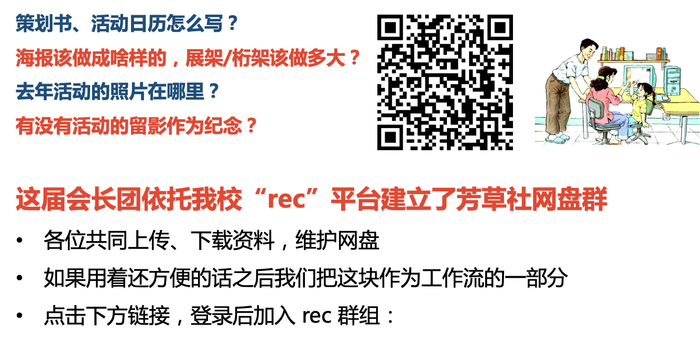
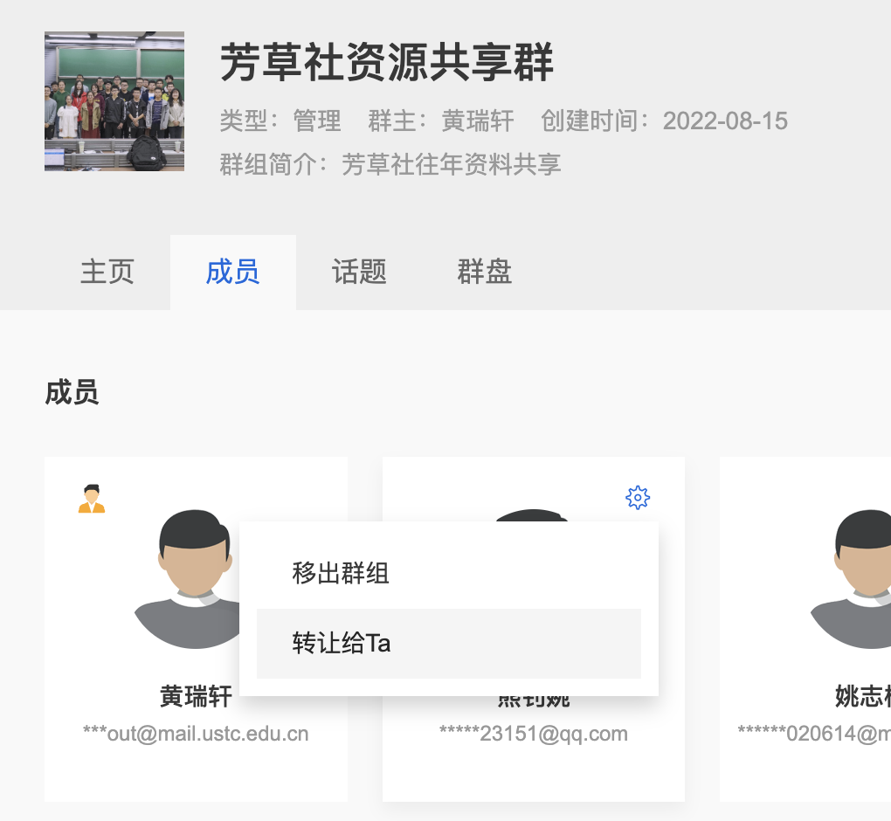

组织建设实用教程¶
什么是芳草社 REC 群组？REC 群组的群主身份如何转让？¶
芳草社三下乡、志愿服务嘉年华、星级志愿者评选相关文件都在这里！

芳草社REC群组链接（上方二维码内容也即这个链接）
怎么把rec群组的群主转让给其他同学？
群主转让：选择「成员」，然后选择需要转让的成员上方的齿轮，点击「转让给Ta」

志愿服务组织申请成立的流程是什么？¶
- 院系、学校机关团组织填写《中国科学技术大学志愿服务组织成立申请书》，并提交至校团委负责志愿服务活动的老师处
- 校团委负责志愿服务活动的老师初步审核
- 申请方主要负责同学进行成立答辩，校团委负责志愿服务活动的老师会同芳草社指导老师、芳草社会长团与青志中心负责同学组成评审委员会进行评定
- 将申请方的《中国科学技术大学志愿服务组织成立申请书》进行归档保存
预定活动场地的流程是什么？¶
预订流程
（一）申请教室请联系理事会分管老师或组织指导老师，由老师负责申请。
（二）申请预约中区艺术教学中心可以通过艺术教学中心三楼前台现场预约或者拨打预约电话0551-63600166预约。
（三）申请其他场地：
- 需提前联系场地物业管理方，确认场地是否空余，并进行预约登记。东区场地预约电话0551-63606810，东区场地预约电话0551-63607077。
- 活动申报成功后，填写场地申请书，到东礼206办公室找理事会分管老师审核。
- 将审批通过的场地申请书交至学生服务中心四楼保卫处403办公室（保卫处签章确认后自己拍个照片留底准备应付物业检查，同时发给负责人）。
有哪些场地可供学生活动申请使用？
（一）各教学楼多媒体教室
（二）东区师生活动中心四楼多功能厅、排练厅
（三）东区师生活动中心七楼多功能厅、排练厅
（四）西区学生活动中心排练厅
（五）西区学生活动中心学术报告厅
（六）西区学生活动中心礼堂
（七）西区学生活动中心多功能厅
（八）西区火灾楼报告厅
（九）东区大礼堂
（十）水上报告厅
（十一）东西区操场
（十二）中区艺术教学中心
学校公共场地及其主管部门对应表？
| 场地 | 主管部门 |
|---|---|
| 大礼堂、水上报告厅 | 保卫与校园管理处 （东区学生服务中心四楼）、东区物业 |
| 各类体育场地、校园内道路、 公共场地等 | 保卫与校园管理处 |
| 西活广场、礼堂、多功能厅、 学术报告厅 | 保卫与校园管理处、西区物业 （西活二楼楼梯口处） |
| 东活广场、排练厅、多功能厅、国际会议室 | 保卫与校园管理处、东区物业 （美广一楼大厅） |
| 普通教室、多媒体教室 | 教务处（老图书馆二楼西侧） |
申请室外场地摆放地推、展架、桁架，张贴横幅海报，发放传单等宣传材料的流程？¶
申请室外场地摆放地推、展架、桁架，张贴横幅海报，发放传单等都需要走下面的流程：
申请流程
（一）填写登记表。填写《宣广信息备案登记表》。
（二）社团管指委初审。携带填写好的《宣广信息备案登记表》、《承诺书》和宣传材料样稿到东区大礼堂二楼206办公室找理事会分管老师审批。
（三）保卫与校园管理处审批
携带审批过的登记表到学生服务中心401找保卫处工作人员审核。
宣传材料可以由负责宣传的同学设计，对于重要宣传资料可以由请专业公司设计，对于设计完成的初稿一定要交理事会分管老师及对应分管副会长进行审核，没有任何问题之后将样稿交理事会分管老师和保卫处审核通过后，才能印刷。
申请摆摊（地推）的模版
保卫处没有明确模板，需自己填写（参考以下文字，纸质申请），然后交给保卫处。
尊敬的保卫与校园管理处：
经校团委批准，为（开展好XXX事情），（YYY摆摊活动）正式立项。我们计划在xx时间xx位置摆摊干什么，望老师批准。
落款：姓名xx
联系电话：123
日期
宣传材料落款格式
- 主办：校团委 校芳草社青年志愿者协会（或校芳草社）
- 承办：志愿服务组织全称
- 协办：各协办组织（如果有）
各类宣传品的尺寸参考
- 海报大小一般为60x80cm
- 展架大小一般为80x180cm（门型）
- 桁架大小有不同种类，3x5m、4x6m、5x7m，需要和布置公司沟通
- 传单大小一般为21x28.5cm
校外打印店联系方式
新起点文印店，位置在从肥西路往北走到黄山路右拐，老板微信 xinqidian1977
美辰快印，老板微信meichen18055153318
举办志愿服务活动的审批流程是什么？¶
志愿汇上举办的志愿服务活动：
各部门自行在志愿汇组织版上进行申请，申请将由志愿汇平台随机指定全国范围内的老师进行审核。
志愿服务组织面向全校同学的二课活动：
部门负责人在二课系统上填写申请，然后会长团同学审核，然后团委老师审核。注意：只有面向全校同学的活动才可以申请二课活动，否则需要在志愿汇上申请志愿服务活动项目。
举办校内志愿服务活动的报销流程是什么？¶
报销流程
报销流程比较复杂，将有专门的章节讲解。
本条仅适用于活动负责人自己垫付购买活动物品之类的报销形式，如涉及到对公转账以及固定资产等方面请与会长团联系。
团体会员走管指委报销渠道，院系青协找院团委走报销流程，如果参加芳草社主办的大型联谊活动如志愿服务嘉年华等可由芳草社报销。
如何为大型志愿服务活动申请工作餐？¶
具体表格参考文件《用餐预定申请表》，填写好后交到饮食服务集团，地点位于（从东区穿过地下通道到达中校区之后，左手边的楼，即能源楼），然后上三楼。
填表提示
申请事由：例如hello ustc迎新活动志愿者工作餐，安徽省大学生文化艺术展节目排练工作餐……
用餐标准：与项目负责人确认，一般20元/人。
申请餐厅：一般选择东苑餐厅（相对熟悉，活动报销会给较长时间）。
是否送餐：
否：则适用于开完会，组织大家去食堂用餐，然后数盘子个数。只要提前给个大概人数就可以。
是：适用于送到指定地点（我们一般是这种）。这个上限人数和保底人数相等。然后视情况给个明确的数字。不能说25-30份。
套餐选择：任意，并没有太大差别。
联系人：填申请人自己或现场的同学。
结算方式：记账。
预计结算时间：填一个你认为可以报销的时间，进行整个活动的报销时提供收据作为凭证即可。